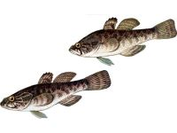

Головешка.


Найбільша помітна частина тіла головешки - велика, трохи приплющена голова з величезним широким ротом, озброїней багаторядними рухомими тонкими і трохи вигнутими зубами. Очі великі, губи широкі, а нижня щелепа видається вперед. Тіло невисоке, в передній частині товсте і стисле з боків в області хвоста, покрите досить великою лускою. Є луска і на більшій частині голови. Перший спинний плавник короткий, а другий за розміром і формою схожий на анальний, хвостовий плавник закруглений. Лівий і правий черевні плавники маленькі і сильно зближені. Забарвлення змінюється залежно від характеру водойми, стаючи то світліше, то темніше. Зазвичай спина чорновато-зелена, бока жовтуваті з темними плямами, на всіх плавниках поздовжні темні смуги або ряди темних цяток. Від рила через око до предкришки проходить вузька темна смужка. Самці перед нерестом стають майже зовсім чорні, як "головешки". Досягають ці рибки в довжину 25 см. Головешка є єдиним представником роду головешек (Percottus).
Населяє прісні води на північному сході Кореї, Китаю і Примор'я. Вперше потрапив в Європу в 1912 р. Його як акваріумну рибу завезли в Санкт-Петербург з Далекого Сходу і під час першої світової війни випустили в ставок, де ротан успішно акліматизувався, знищивши при цьому всіх риб. В 1920-х рр. минулого сторіччя його вже знаходили в багатьох водоймах поблизу Ленінграда, в 1950-х рр. виявили на мілководдях Фінської затоки, а пізніше і в Калінінградській області. Друга хвиля вторгнення рота (більш потужна) пов'язана з комплексною експедицією з вивчення Амура. На цей раз в 1948 р. його привезли в місто Москву, де з акваріумів наукових установ ротан перемістився до любителів. Потім цих риб випустили кілька московських ставків, де вони сильно розмножилися і розселилися по численним водойм, ставши серйозними шкідниками рибного господарства.
Поширилась по басейнах, Москва річки, Оки, Верхній Волги, ротан, нарешті, зміг потрапити в басейн Верхнього Дніпра, звідки і почалася його експансія в водойми України. У російській частині басейну Дніпра ротан-головешка відзначений тільки північно-західніше Курська і в самому місті і то тільки у водоймах, не придатних для проживання інших риб. Найбільш часто зустрічається у водоймах між насипами залізничних шляхів в р. Курську. Перший випадок знаходження його в Україні датується 1988 роком. Тоді один примірник цієї риби був доставлений в Зоологічний музей НАН України з річки Вишні, яка є притокою р. Сян (Львівська обл.). У серпні 2001 р. виявлено стійка популяція рота в басейні р. Стугна. Є усні повідомлення, що цей вид живе в невеликих водоймах Баришівського р-на та на Чернігівщині.
Завдяки високій екологічної пластичності, широкому спектру харчування та охорони потомства інтенсивно витісняє багато видів аборигенної іхтіофауни. Надзвичайно витривала риба, легко переносить зміни температури і недолік кисню у воді. Вона прекрасно живе в дрібних зарослих озерцях в холодних болотах, протоках і сильно прогріваються заплавах, зустрічаючись у водоймах, де, крім неї, може жити лише один карась, і навіть там, де інші риби взагалі не зустрічаються. Наприклад, ця рибка мешкає в невеликих водоймах, часто пересыхающих влітку і що промерзають взимку. Від природних негараздів головешка ховається, закопавшись в мул, де і чекає кращих часів. Гинуть ці рибки влітку тільки тоді, коли обсохне і донний іл.
Головешка - надзвичайно ненажерливий хижак, виїдаючий у водоймі все живе, доступне йому за розмірами. У басейні Амура і річках Примор'я, де він початково мешкав, головешка перебував під жорстким пресом численних в цих річках великих хижих риб і досягав у довжину не більше 14 см. За таких скромних розмірах ці рибки цілком задовольнялися водними личинками комах, хоча і промишляли молоддю та ікрою риб. Улюбленою їжею їм служили личинки комарів, тому у водоймах, де мешкає ротан, личинки комарів зазвичай не зустрічаються, і цим він приносить безсумнівну користь в боротьбі з малярією.
Дозріває головешка у віці двох років і розмножується весни - на початку літа при температурі 15-20°С. До нересту самець стає абсолютно чорним, і у нього з'являється на лобі жирової виріст, самки до нересту, навпаки, бліднуть. Нерестові гри у цих риб тривають кілька днів, потім самки відкладають рівними рядами на рослини або камені свої довгасті ікринки. Кожна з таких ікринок прикріплюється до субстрату тонким ниткоподібним выростом. Самка викидає близько тисячі ікринок. Самець охороняє своє потомство і обмахує кладку грудними плавниками, забезпечуючи зародкам необхідне надходження кисню. Він люто відганяє від кладки всіх інших риб і впадає навіть на руку людини. Живе ротан до п'яти-семи років.
М'ясо у головешки дуже смачне, проте велика частина тіла цієї рибки припадає на голову. Тому, хоча в деяких місцях він і використовується в їжу, але серйозного промислового значення не має. Головешка вважається дуже шкідливою рибою, яка внаслідок своєї ненажерливості може винищити усі види риб у водоймі або суттєво скоротити їх популяції.